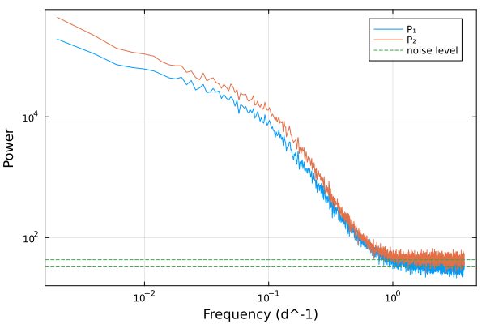
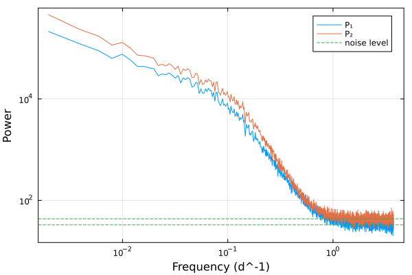

Simulating delayed time series
Let's simulate two time series with a delay
using Tonari
using Random
using Plots
using StatsBase
rng = MersenneTwister(42)Random.MersenneTwister(42)Let's define the individual power spectral densities and the phase delay. We will use two bending power laws and a constant time delay.
p1 = SingleBendingPowerLaw(1.0, 0.63, 10e-2, 3.22)
p2 = SingleBendingPowerLaw(1.0, 0.78, 13e-2, 3.81)
Δϕ = ConstantTimeLag(12.35)ConstantTimeLag(12.35)The cross-spectral density is defined by the two power spectral densities and the phase delay.
cs = CrossSpectralDensity(p1, p2, Δϕ)CrossSpectralDensity(SingleBendingPowerLaw{Float64}(1.0, 0.63, 0.1, 3.22), SingleBendingPowerLaw{Float64}(1.0, 0.78, 0.13, 3.81), ConstantTimeLag(12.35))We can now simulate the time series using the Simulation type.
T, Δt = 504.2, 0.133
simu = Simulation(cs, T, Δt)Simulation{CrossSpectralDensity, Float64, Float64, Float64, Float64}(CrossSpectralDensity(SingleBendingPowerLaw{Float64}(1.0, 0.63, 0.1, 3.22), SingleBendingPowerLaw{Float64}(1.0, 0.78, 0.13, 3.81), ConstantTimeLag(12.35)), 504.2, 0.133, 10.0, 10.0, 0.0:0.133:504.07)and sample 50 time series.
t, y, yerr = sample(rng,simu,50,error_size=0.15)([0.0, 0.133, 0.266, 0.399, 0.532, 0.665, 0.798, 0.931, 1.064, 1.197 … 502.607, 502.74000000000007, 502.87300000000005, 503.00600000000003, 503.13900000000007, 503.27200000000005, 503.40500000000003, 503.53800000000007, 503.67100000000005, 503.80400000000003], Any[[-0.4144341543747415 0.1287674628778816 … 0.07059302087552538 0.3504290443006563; -0.7578960897268503 0.17674568892119724 … 0.01130821323281924 0.2988874338660103; … ; -0.017268161382970548 -0.6344294548933497 … 0.5921864026753137 -0.022224948414584708; 0.016260435132335493 -0.8421341560960572 … 0.5881760618951839 -0.0019815062813493337], [-0.061396096660469524 -0.0509909350741637 … 0.021017296288430038 -0.8760107229607564; -0.17699908445488707 -0.07998792022470055 … 0.1247072729549913 -1.028846393045914; … ; -0.24454382075681075 -0.38281036834972776 … -0.4463810039874465 -0.6931421882152776; -0.2622066790361061 -0.632875032044479 … -0.48224385454022545 -0.5284426261242894]], Any[[0.1387607747005222 0.12387260662348581 … 0.028295696202500487 0.15060445633395092; 0.04698004275318045 0.10703674028775728 … 0.04182044642288425 0.06583434095151355; … ; 0.03259226568884294 0.21073958497723652 … 0.11015448102052716 0.04090746567701486; 0.0028482639684567594 0.10913836519228953 … 0.01280758895321545 0.0011247327727715555], [0.1091468565361805 0.010081207096284527 … 0.006053218695836665 0.015555752000915794; 0.08915215135281179 0.0009104687112241068 … 0.013319217734668803 0.1097257881767855; … ; 0.034254095928493426 0.1665747034646627 … 0.1006033656756783 0.037848199752556794; 0.07833560164393384 0.08679013784174171 … 0.07546419741630409 0.16080718907378405]])scatter(t,y[1][:,1],yerr=yerr[1][:,1],label="1", framestyle=:box)
scatter!(t,y[2][:,1],yerr=yerr[2][:,1],label="2", framestyle=:box, xlabel="Time (days)", ylabel="Value")
The cross periodogram can be computed using the cross_periodogram function. γ² is the coherence, Δφ the phase difference and Δτ the time delay.
f, γ², γ²_corrected, Δφ, γ²_err, γ²_corrected_err, Δφ_err, Δτ, Δτ_err, P̄₁, P̄₂, N₁, N₂, n = cross_periodogram(t, y[1], y[2], yerr[1],yerr[2])([0.00198437503100586, 0.00396875006201172, 0.00595312509301758, 0.00793750012402344, 0.009921875155029299, 0.01190625018603516, 0.013890625217041019, 0.01587500024804688, 0.01785937527905274, 0.019843750310058597 … 3.740546933446046, 3.7425313084770515, 3.7445156835080575, 3.746500058539063, 3.748484433570069, 3.750468808601075, 3.7524531836320807, 3.7544375586630867, 3.7564219336940927, 3.7584063087250983], [0.9893470673875042; 0.9756114587031329; … ; 0.049220504877419004; 0.06541576009056574;;], [0.9896051370388712; 0.9760835241779775; … ; 1.581485976814071; 2.566090915976792;;], [0.10016376818106243; 0.27815895022393833; … ; -1.7416133044398854; -2.948670699784745;;], [0.002119207639414804; 0.00481786101559474; … ; 0.04218740718815956; 0.04780679671014818;;], [0.04653054794952457; 0.07114597889078403; … ; 4.464004162688735; 3.8890853023005034;;], [0.0010710132517049043; 0.0024691494614049823; … ; 0.4285552057341245; 0.3654073318414509;;], [8.033541329456344; 11.154739200420206; … ; -0.07378999783542171; -0.12486556238784402;;], [0.08589961598103603; 0.0990179114015806; … ; 0.018157353083410186; 0.015473681748984414;;], [193110.90688972024; 109784.35729349472; … ; 37.35549491979065; 29.987228457592394;;], [444464.3648458722; 219602.57797965553; … ; 50.617684479909556; 35.96318402570241;;], 32.73989278943662, 42.9515217977785, [456894.33504445374; 238075.27692931314; … ; 37.109293972670855; 21.18399334634204;;])The individual periodograms can be plotted:
plot(f,P̄₁,label="P₁")
plot!(f,P̄₂,xscale=:log10,yscale=:log10,label="P₂",xlabel="Frequency (d^-1)",ylabel="Power")
hline!([N₁,N₂],linestyle=:dash,label="noise level", framestyle=:box)
The coherence and the phase difference can be plotted as a function of the frequency:
l = @layout [a; b]
p1 = scatter(f, γ²_corrected, yerr=γ²_corrected_err, label="γ² corrected",marker=:square,ms=4,xscale=:log10,size=(800,400))
p1 = scatter!(f, γ², yerr=γ²_err, label="γ²", xscale=:log10,ylims=(0,1.1),ms=4,ylabel="Coherence",link=:x, framestyle=:box)
p2 = scatter(f, Δτ, yerr=Δτ_err, xscale=:log10, ylabel="Time delay (d)",xlabel="Frequency (d^-1)",link=:x, framestyle=:box,label=nothing)
p2 = hline!([Δϕ.Δτ ],color=:black,label="True delay")
plot(p1, p2, layout=l,size=(800,600))
With a constant phaselag
p1 = SingleBendingPowerLaw(1.0, 0.63, 10e-2, 3.22)
p2 = SingleBendingPowerLaw(1.0, 0.78, 13e-2, 3.81)
Δϕ = ConstantPhaseLag(56.2,5*1/T)
cs = CrossSpectralDensity(p1, p2, Δϕ)CrossSpectralDensity(SingleBendingPowerLaw{Float64}(1.0, 0.63, 0.1, 3.22), SingleBendingPowerLaw{Float64}(1.0, 0.78, 0.13, 3.81), ConstantPhaseLag(56.2, 0.009916699722332408))T, Δt = 504.2, 0.133
simu = Simulation(cs, T, Δt)Simulation{CrossSpectralDensity, Float64, Float64, Float64, Float64}(CrossSpectralDensity(SingleBendingPowerLaw{Float64}(1.0, 0.63, 0.1, 3.22), SingleBendingPowerLaw{Float64}(1.0, 0.78, 0.13, 3.81), ConstantPhaseLag(56.2, 0.009916699722332408)), 504.2, 0.133, 10.0, 10.0, 0.0:0.133:504.07)t, y, yerr = sample(rng,simu,50,error_size=0.15)([0.0, 0.133, 0.266, 0.399, 0.532, 0.665, 0.798, 0.931, 1.064, 1.197 … 502.607, 502.74000000000007, 502.87300000000005, 503.00600000000003, 503.13900000000007, 503.27200000000005, 503.40500000000003, 503.53800000000007, 503.67100000000005, 503.80400000000003], Any[[-0.851692333886342 0.198095300386187 … -0.32270756069110285 -0.32351398765636386; -0.7537957479291086 0.25322178895680264 … -0.2942542559395608 -0.16320519986329823; … ; 0.045174800757882855 0.3658596817492605 … -0.2665322197368204 0.05561998065942543; 0.1533063157674755 0.410676714638672 … -0.17428151467346018 0.08095816410873581], [1.0008573140624324 -0.4521334885632576 … 0.11956080496910207 0.0820407873907939; 1.0016427194715694 -0.549402409735605 … 0.09430173534954349 -0.0028182159147495736; … ; -0.19138952070607887 -0.6507387577494664 … 0.06598097373938078 0.016938122262482914; -0.21119916785712353 -0.6581542789448706 … 0.017552638106176976 0.009060949846231615]], Any[[0.006747826490825116 0.12087619442447016 … 0.016939117188819266 0.05003479209528249; 0.13589427306782345 0.04717873276511439 … 0.04181664678777832 0.015442222427216627; … ; 0.09177943459626746 0.002220027404647948 … 0.03809988099915661 0.0017723996852161065; 0.062052257997552214 0.0913507365741128 … 0.01017732298207376 0.05004718264281979], [0.13581303690598245 0.03045600176200879 … 0.10643014504076269 0.015392087027541896; 0.010468559935763207 0.029556089696008103 … 0.009927834876457615 0.029849112806976226; … ; 0.020473516632957905 0.07499069467261694 … 0.012011707176728462 0.010851511832765656; 0.05444452669645776 0.11749800882020513 … 0.011172138297159321 0.0029504940889177223]])scatter(t,y[1][:,1],yerr=yerr[1][:,1],label="1", framestyle=:box)
scatter!(t,y[2][:,1],yerr=yerr[2][:,1],label="2", framestyle=:box, xlabel="Time (days)", ylabel="Value")
f, γ², γ²_corrected, Δφ, γ²_err, γ²_corrected_err, Δφ_err, Δτ, Δτ_err, P̄₁, P̄₂, N₁, N₂, n = cross_periodogram(t, y[1], y[2], yerr[1],yerr[2])([0.00198437503100586, 0.00396875006201172, 0.00595312509301758, 0.00793750012402344, 0.009921875155029299, 0.01190625018603516, 0.013890625217041019, 0.01587500024804688, 0.01785937527905274, 0.019843750310058597 … 3.740546933446046, 3.7425313084770515, 3.7445156835080575, 3.746500058539063, 3.748484433570069, 3.750468808601075, 3.7524531836320807, 3.7544375586630867, 3.7564219336940927, 3.7584063087250983], [0.9796957545624; 0.9831065163731462; … ; 0.00555344190154959; 0.0009602051449848157;;], [0.9799350761035601; 0.9835485681332893; … ; 91.04569344658321; -0.8614481640234942;;], [-2.822504827377869; -2.8062714509210376; … ; -1.496257276614328; 2.3466187185225227;;], [0.004019411430473058; 0.003350036186802632; … ; 0.014821513741546943; 0.006191484611778378;;], [0.06471277779779891; 0.058874105513923344; … ; 29.945226805225296; 81.96893403821343;;], [0.002051356970648712; 0.0017038012316109487; … ; 1.3344439362381066; 3.2240426142875367;;], [-226.37635938717779; -112.53718830692881; … ; -0.06339456693465803; 0.09937083378606729;;], [0.16452716690315705; 0.06832589198612553; … ; 0.05653873619102243; 0.1365265691502195;;], [213118.23389223512; 120915.41245335141; … ; 33.177603181455055; 38.058267164069974;;], [456549.30395353143; 232103.79018223388; … ; 42.35657427456973; 51.54570908253975;;], 32.934772317850346, 43.27503871003785, [485152.4389107405; 257509.5876954799; … ; 28.110252898391142; 38.38731260792863;;])plot(f,P̄₁,label="P₁")
plot!(f,P̄₂,xscale=:log10,yscale=:log10,label="P₂",xlabel="Frequency (d^-1)",ylabel="Power")
hline!([N₁,N₂],linestyle=:dash,label="noise level", framestyle=:box)
l = @layout [a; b ; c]
p1 = scatter(f, γ²_corrected, yerr=γ²_corrected_err, label="γ² corrected",marker=:square,ms=4,xscale=:log10,size=(800,400))
p1 = scatter!(f, γ², yerr=γ²_err, label="γ²", xscale=:log10,ylims=(0,1.1),ms=4,ylabel="Coherence",link=:x, framestyle=:box)
p2 = scatter(f, Δφ, yerr=Δφ_err, xscale=:log10, ylabel="Time delay (d)",xlabel="Frequency (d^-1)",link=:x, framestyle=:box,label=nothing)
p2 = plot!(f,Δϕ(f) .* 2 .*pi .* f )
println(Δϕ(f[1]) .* 2 .*pi .* f[1] )
p3 = scatter(f, Δτ, yerr=Δτ_err, xscale=:log10, ylabel="Time delay (d)",xlabel="Frequency (d^-1)",link=:x, framestyle=:box,label=nothing)
p3 = plot!(f,-Δϕ(f) )
plot(p1, p2,p3, layout=l,size=(800,900))